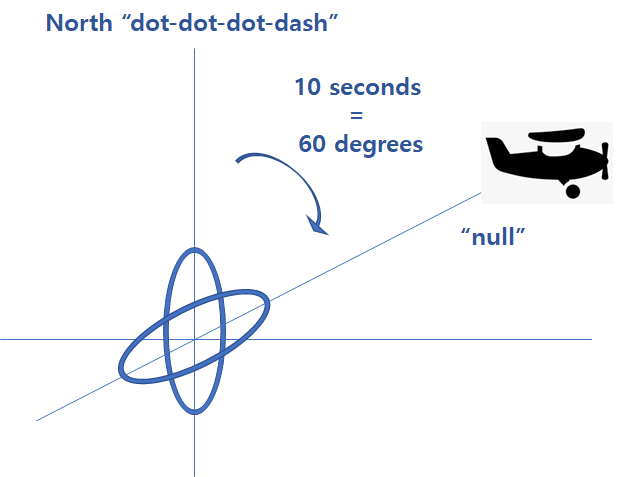
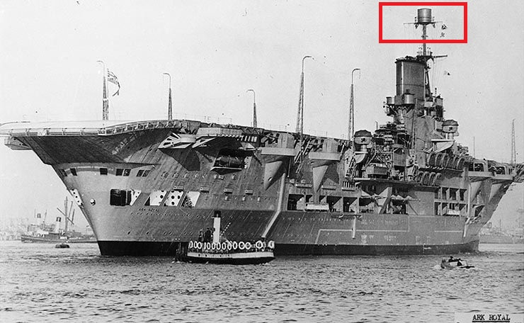
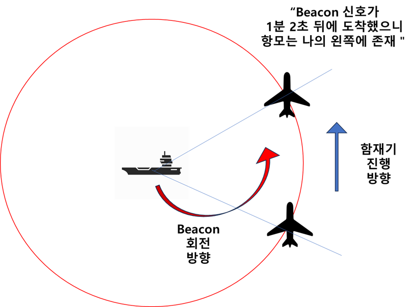
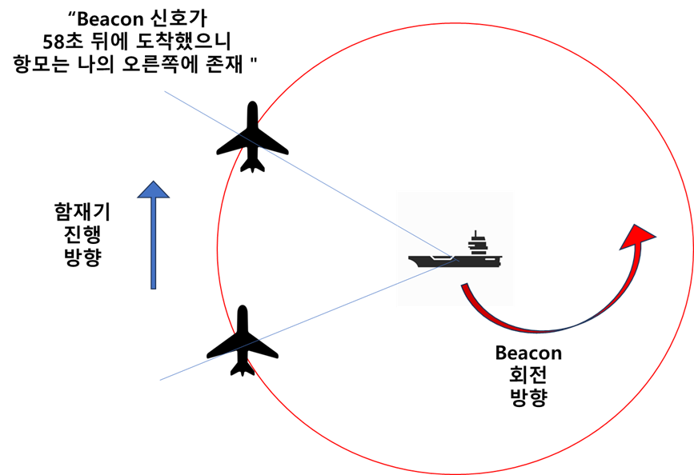
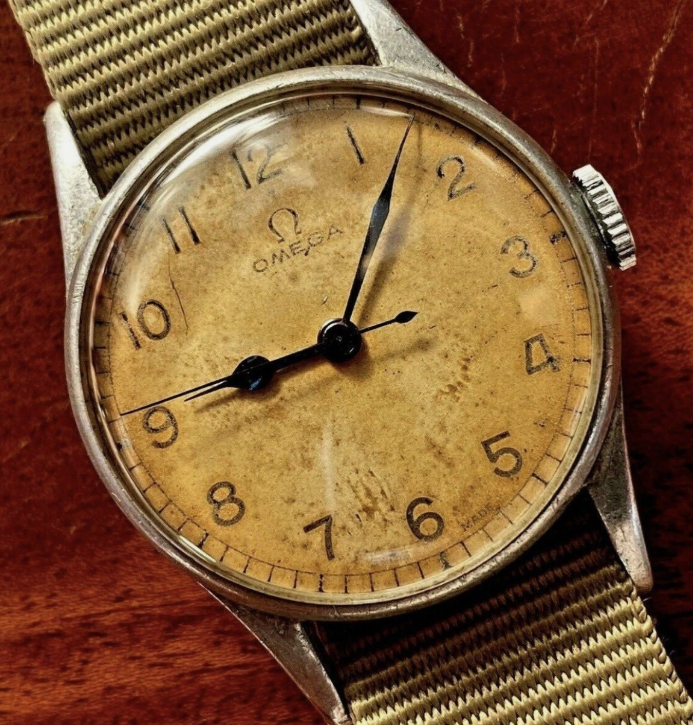

WW2 중 항모에서의 야간 작전 (27) - 크로노미터와 손목시계
게시: 2025-08-21T06:30:58+09:00
<항모 꼭대기에 등대를 달았어요> 전에 항법 실력이 떨어지는 영국 공군 항법사들을 위한 전파 등대인 Orfordness Beacon에 대해서 포스팅을 올린 바 있었음 ( https://nasica1.tistory.com/676 참조). 그러니까 이 방법을 적용하면 어둠 속을 비행하는 조종사들이 항모가 지금 어느 방향에 있는지를 찾는 것은 크게 어렵지 않음.

(Orfordness Beacon의 신호를 이용하여 자신의 상대적 방위각을 파악할 수 있는 원리. 이런 비콘이 2개 있다면 지도상에서 자신의 위치를 꽤 정확하게 fix할 수 있었음. 자세한 이야기는 https://nasica1.tistory.com/676 참조 )
다만, 등대와 항모는 처지가 다름. 일단, 등대는 움직이지 않지만 항모는 끊임없이, 그것도 20~30노트의 고속으로 움직임. 그리고 등대의 위치는 아군은 물론 적군도 훤히 알고 있지만 항모의 위치는 아군만 알아야 하고 적군은 몰라야 함. 그건 쉽지 않음. 어떻게 생각하면 등대보다 항모에서 함재기를 유도하는 것이 더 단순할 수도 있음. 등대는 다른 등대와의 협업을 통해, 지나가는 항공기가 자신의 정확한 위치를 찾을 수 있도록 해줘야 하지만, 함재기는 지도상의 정확한 위치를 파악할 필요는 없고, 단지 어느 방향으로 날아가야 항모를 찾을 수 있는지 그 방향만 알 수 있으면 되기 때문. 1940년 11월, 타란토 항구를 습격하던 HMS Illustrious에게 설치되었던 것은 Type 72 homing beacon. 이건 대략 180 MHz ~ 220 MHz 정도의 VHF 주파수 신호를 지향성 전파로 쏘아주는 장치. 당시 영국이 사용하던 chain home 레이더나 미해군이 사용하던 CXAM 레이더는 VHF로 강력한 지향성 전파를 만들기 위해 여러 개의 발신 dipole (쌍극자) 요소를 병렬로 배치한 거대한 사각형 프레임 구조로 되어 있었음. 그러나 유도용 전파가 그렇게까지 강력할 필요도 없었고, 또 공간과 무게에 제약이 있는 항모에서 전파 유도를 위해 그런 거대한 장치를 달 수는 없었음. 그래서 이 등대 신호 전파를 쏘는 dipole (쌍극자) 안테나 뒤에 포물선 모양의 곡면을 가진 반사판(reflector)을 달아 지향성 전파를 만들었음. 그렇게 반사판을 달아 지향성 전파를 만든다고 해도, side robe 현상, 즉 뒤나 옆 방향으로 삐져나오는 전파 신호를 완전히 차단할 수는 없었으므로, 아예 그 beacon을 원통형 알루미늄 케이스로 덮어 버리고, 전파가 나오는 방향으로만 개구부(aperture)를 뚫어 놓음.

(1940년 HMS Illustrious 꼭대기에 보이는 저 드럼통이 바로 Type 72 homing beacon) 잠깐, 지향성 전파? 아니, 자함 함재기의 위치가 어디인지 알고 지향성 전파를 쏴? 모름. 그래서 beacon을 1분에 1번씩 회전시키면서 전파를 쏨. 그러니까 함재기가 어느 곳에 있든지 1분에 1번씩 전파 신호를 받게 되는 것. 그런데 1분에 1번, 불과 1초 남짓 지속되는 전파를 이용해서 그 전파 발신원이 어느 방향에 있는지 파악하는 것이 가능한가? 전에 포스팅했던 (https://nasica1.tistory.com/804 참조) Watson-Watt 박사가 만든 '번개 탐지기', 즉 Huff-Duff (high-frequency direction finding (HFDF))를 사용하면 가능하겠으나, 1940년에는 아직 그 기술이 완성된 상태가 아니었으므로 불가능. 그러면 어떻게? 일단 함재기가 출격하기 전에, 항법사는 항모에서 어떤 주파수의 beacon 신호를 쏠 것인지를 전달받고 그 주파수에 R1110 beacon 수신기를 맞춰 둠. 그러면 항모로 돌아올 때, 그 beacon 주파수에 수신기를 맞추면 항법사의 귀에 1분에 1번, 삐- 하는 신호가 들림. 딱 그것 뿐임. 그것만으로 어떻게 항모가 어느 방향에 있는지 찾을 수 있었을까? <제발 격추 좀 당하지마> 여기서부터는 물리학자의 분야가 아니라 엔지니어의 분야. 누가 이런 항법 방법을 고안해냈는지는 모르겠으나, 개인적으로 매우 기발하다고 감탄했음. 사람들이 전쟁사, 그리고 그와 관련된 소소한 기술 이야기를 좋아하는 것은 살인을 위해 사람들이 두뇌를 짜내는 것이 위와 같이 기가 막히게 기발하기 때문. 내가 볼 땐 거의 돈 벌기 위해 두뇌를 짜내는 것과 맞먹는 수준. 함재기가 항모를 찾아 돌아오는 것을 도와주는 Type 72 beacon은 사람 죽이는 장치는 아니라고 볼 수도 있겠으나... 실은 사람 죽이는 것에 결정적으로 도움을 주는 장치니까 오십보백보임. 위에서 언급한 것처럼 어둠 속을 비행하는 항법사에게 주어진 것은 저 멀리 어디에선가 항모가 1분에 1번씩 쏘아주는 '삐-' 신호 하나뿐. 그걸 듣는 순간, 항법사는 그 신호가 들린 시간을 확인. 그리고나서 초조하게 다음 신호가 들릴 때까지 걸린 시간을 확인. 잠깐, 신호는 1분에 1번 온다고 하지 않았나? 그런데 뭘 시간을 재? 그런데 차이가 남. 조심스럽게 다음 신호가 들릴 때까지의 시간이 정확하게 1분이 아니라 가령 58초나 1분 2초 걸리는 경우가 발생함. 이유는? 함재기가 항모 비콘 방향에서 약간 비껴나간 각도로 이동하고 있기 때문. 말로 설명하면 힘들지만 아래 그림을 보시면 한 눈에 이해가 가실 것임.
 
(물론 beacon의 회전 방향이 이 그림처럼 반시계 방향이 아니라 시계방향이라면 항모의 방향은 반대가 될 것임) 만약 beacon 신호가 정확하게 1분 간격으로 들린다면? 그건 항모가 정확하게 함재기의 기수 방향에 있다는 뜻임. 물론 저런 방식으로는 항모가 정확하게 기수 방향에 있는지 아니면 180도 반대인 꼬리 방향에 있는지는 알 수 없음. 그러나 상식적으로 함재기에 나침반은 있을 것이니, 상식적인 항법사라면 그것 정도는 구분할 수 있었을 것. 가령 타란토 기습에 나섰던 소드피쉬의 항법사들은 모함인 HMS Illustrious가 당연히 남쪽 어디엔가 있을 것이지 북쪽 어디엔가 있을 거라고는 생각하지 않았을 것. 그런데 초음속 제트기도 아니고 느려터진 소드피쉬의 속도로는 항모의 비콘 회전 속도에 따라 생기는 신호 수신 시간차가 크지 않았을 것. 그렇다면 이게 59.03초인지 60.03초인지가 굉장히 중요해질 텐데, 그렇다면 더더욱 시계가 매우 정밀해야 했음. 그래서 WW2 초기만 해도 항법사들에게는 항법용 정밀 시계인 크로노미터(chronometer)가 지급되었음. 그런데 문제가 있었음. 크로노미터는 굉장히 비싼 물건인데, 이걸 가지고 비행에 나섰던 함재기들이 종종, 실은 매우 자주 격추되어 불귀의 객이 되는 것임. 물론 사람도 함재기도 다 아깝지만 크로노미터는 보기보다 매우 비싼 물건이고 생산량에도 한계가 있었음. 결국 나중에는 크로노미터 대신 그냥 일반 손목시계를 나눠줬다고. 물론 손목시계의 정밀도는 다소 떨어졌으므로, 그에 따라 함재기의 귀환 항로가 비뚤비뚤 오락가락하면서 항법사가 고생을 좀 했겠으나, 어차피 항모 근처까지 가기만 하면 항모의 유도등을 눈으로 볼 수 있었으므로 그건 큰 문제까지는 되지 않았음.

(WW2 중에 사용된 Royal Navy FAA (Fleet Air Arm, 영국해군 항공대) 조종사가 실제로 사용했던 오메가 손목시계)
항모 근처까지 와서는 어떻게 유도했을까? 무선 관제 아니었나? 횃불이라도 밝혔을까? 저 전파 등대도 그렇고, 그런 불빛 때문에 적에게 발각될 위험은 없었을까? 그 이야기는 다음 주에.